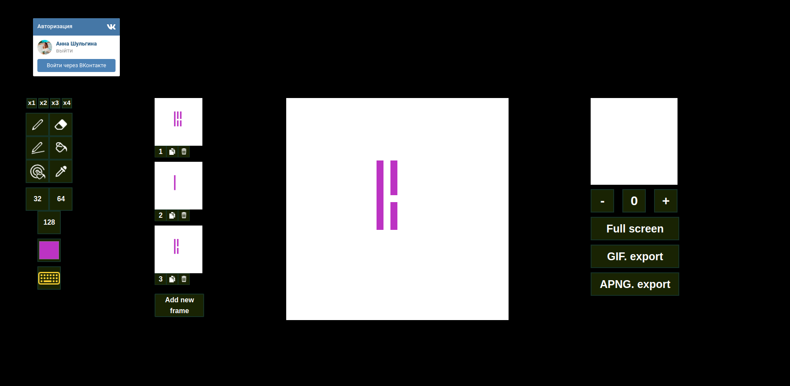
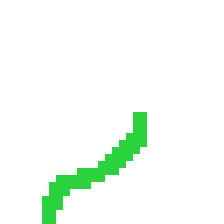
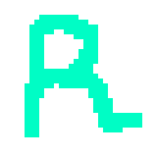
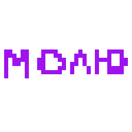

It's a free online editor for animated sprites & pixel art

Create animations in your browser. Try an example, use VK sign in to access your gallery or simply create a new sprite.



Check a preview of your animation in real time as you draw. Adjust the frame delay on the fly.

No need to remember yet another password, just use your VK account to sign in.


Several export modes supported. Animated GIFs for sharing, spritesheet PNG for bigger projects...
Use your own shortcuts for tools.